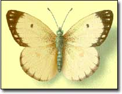
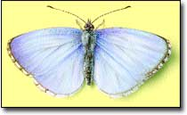
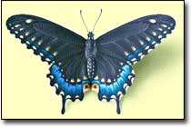
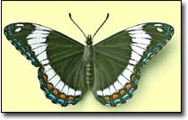
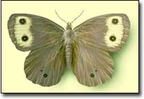
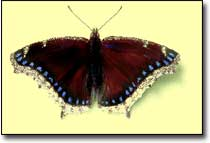
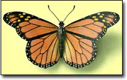
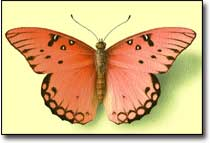

Have you ever stopped in the midst of your garden chores to watch a bright yellow swallowtail as it lands on a coneflower? If you approach slowly, you may be surprised at how close you can get to a feeding butterfly. With a hand lens, gaze at its compound eye, its overlapping wing scales and its long proboscis, uncoiled like a soda straw to sip nectar. Keep that hand lens at the ready. You’ll discover a fascinating world within your butterfly garden: Watch a female butterfly as she lays eggs on the undersides of leaves, and marvel at the development of tiny caterpillars within the eggs during the next few days. Keep an eye out for gobbling caterpillars pausing to shed their too-tight skins, and jewellike chrysalides dangling from branches as the insects inside transform into dazzling adult butterflies.
Like all living organisms, butterflies are classified within the Linnaean system. Thus, a painted lady (Vanessa cardui) belongs in the kingdom Animalia, phylum Arthropoda, class Insecta, order Lepidoptera, family Nymphalidae, genus Vanessa and species cardui. Butterflies and moths make up the order Lepidoptera, which means “scaly wings.” There are nine times as many moths as butterflies, a remarkable fact considering that scientists have classified almost 20,000 species of butterflies worldwide. Most inhabit the tropics; about 700 species can be found in North America, north of Mexico. In addition, many tropical vagrants are spotted occasionally in Florida and the Southwest.
What determines a butterfly’s placement within one family? It may share family characteristics such as wing structure, behavior or caterpillar host plants. For example, butterflies in the large family Nymphalidae are called brushfoots because they all have short, brushy forelegs. They also tend to be strong, fast fliers.
A good regional guidebook, with geographic range maps and a caterpillar host plant index, is invaluable (see “More Butterfly Information,” Page 67, for a few recommendations). Your own observations on behavior, such as wing posture while basking, will aid in identification and bring greater pleasure to your butterfly watching, too. Here’s an overview of butterfly families to look for in your garden:
Whites and Sulphurs
These medium-size butterflies with wingspans from 1 to 3 inches can be found in gardens, fields and disturbed areas. Whites, which may have greenish marbling on the undersides of their wings, lay eggs on mustards (Brassica). They are strong fliers but do not wander. The cabbage white is the most common white, and its caterpillar is a common pest of cabbage and broccoli plants. Sulphurs, named for their yellow coloration, may disperse in large numbers in the fall - perhaps as a response to a sudden population boom. Both male and female sulphurs are avid puddlers (sipping minerals from wet soil; see tip No. 7, Page 66). Their caterpillars feed on legumes such as alfalfas (Medicago) and clovers (Trifolium).
Coppers, Blues and Hairstreaks
Known as gossamer wings, the butterflies in this family are tiny, with wingspans from seven-eighths to 2 inches, and have iridescent wings. As color distinctions can blur, a field guide is useful: There is a blue copper, and many female blues are coppery in hue. Hairstreaks are named for a hairlike tail on each hindwing. Near the tail, they often have an eyespot, creating the impression of a head with antennae. They rub their hindwings together to confuse predators into attacking that end. All rest with their wings closed. Tiny, sluglike caterpillars of blues and hairstreaks may associate with ants, which protect them in exchange for protein-rich secretions. They often pupate in leaf litter and may overwinter in this stage.
Swallowtails
Colorful and large, with wingspans of up to 5 1/2 inches, swallowtails glide into your garden seeking nectar from a variety of flowers. They often flutter their wings while feeding, perhaps as a means of keeping balance. Their hindwings have tails that distract predators into attacking their rear rather than their more vulnerable head. Male swallowtails engage in puddling and hilltopping (swooping over a ridge to investigate territory and seek mates). The caterpillars may resemble bird droppings or have fake eyespots behind their heads. Many caterpillars have an osmeterium, a forked organ behind the head that emits a foul odor when the caterpillar is threatened. Most swallowtails overwinter as a ridged green or brown chrysalis attached to a tree or building with one strand of silk.
Brushfooted Butterflies
Members of this large, diverse family, which includes admirals, true brushfoots, longwings, satyrs, milkweed butterflies and fritillaries, are named for their short, brushlike forelegs - which make them appear to have only four legs. Mostly medium-size (wingspans from 1 1/2 to 4 inches), brushfoots have wings that are often partly orange. They may have cryptic markings on their undersides to camouflage against tree bark or soil. Brushfoots are strong, fast fliers. Some, most notably monarchs, migrate long distances in spring and fall.
Many brushfoot caterpillars are covered with wicked barbs, which protect them from predators and parasitic wasps. They may feed in groups for safety, or rest during the day and feed at night. The chrysalides are often angled and knobby, with clearly defined wing shapes. They hang from branches, without silken girdles (strands of silk).
Admirals
Medium in size, with wingspans from 2 to 3 1/2 inches, admirals are attracted to tree sap and wet soil, but they also will visit garden flowers. Some gain protection from predators by mimicking unpalatable species: Viceroys look remarkably like monarchs, and red-spotted purples resemble pipevine swallowtails. Tiny caterpillars overwinter inside a rolled-up leaf, attached to a tree with silk. In spring, they crawl out to feed on new foliage.
True Brushfoots
Some of our most familiar garden butterflies fall into this category. Painted ladies, red admirals and California tortoiseshells often disperse from the Southwest in great numbers in late spring. Buckeyes spread north in summer, then migrate south in the fall. Mourning cloaks (shown at right) are widespread and frequent open woods and suburbs. Because of their long life spans, they need additional nutrients and seek minerals and amino acids from rotting fruit, tree sap, animal scat and carrion.
Longwings
Longwings, or heliconians, are tropical butterflies with long, narrow wings. They have wingspans of 2 1/2 to 3 3/4 inches. All use passion flowers (Passiflora) as host plants - a diet that renders caterpillars and adults distasteful to predators.
Satyrs
Mostly medium-size, with wingspans from 1 to 2 7/8 inches, satyrs are dull brown or gray, with several eyespots along the edges of their wings (see wood nymph satyr at left). They blend into their grassy habitat when basking with wings closed. Satyrs fly weakly near the ground and are more likely to seek tree sap than nectar. The two-tailed caterpillars overwinter in leaf litter or attach themselves to grass blades with silk. In spring, they form smooth chrysalides on grass blades or in litter.
Milkweed Butterflies
Of this tropical subfamily, the monarch and queen are the main North American butterflies. Their large orange wings spanning 3 to 4 inches warn predators that they taste bad, due to toxins they ingest when feeding on their primary host plants, the milkweeds (Asclepias). They are strong fliers, undertaking long migrations in spring and fall. Caterpillars are boldly striped in warning colors of yellow, black and white. The rounded chrysalides, hanging from branches, are celadon-green with a band of gold dots. They become transparent, revealing the orange wings within about a day before the butterflies emerge.
Fritillaries
Fritillaries inhabit northern and alpine regions. Bright orange with a checkered pattern, they range in size from small to large (wingspans from 1 1/2 to 3 3/4 inches), with most falling in the middle. Violets (Viola) are their primary caterpillar host plants. Greater fritillaries, such as the great spangled fritillary, also are called silverspots, for the silvery markings on the wing undersides. Misnamed for its orange coloration, the gulf fritillary actually is a longwing.
Adapted from The Butterfly Gardener’s Guide, edited by Claire Hagen Dole and one of the Brooklyn Botanic Garden’s All-Region Guides. To order this and other titles published by the Brooklyn Botanic Garden, call (718) 623-7286 or shop online at www.bbg.org.
|
 |
 |
 |
|
 |
 |
 |
|
 |
 |
|